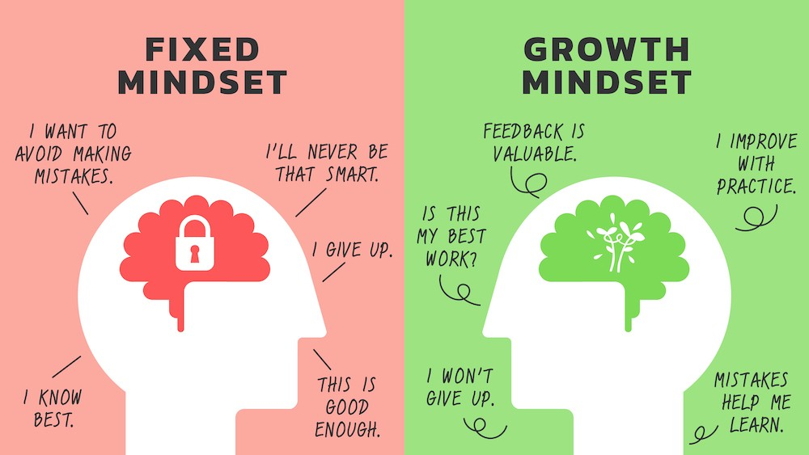
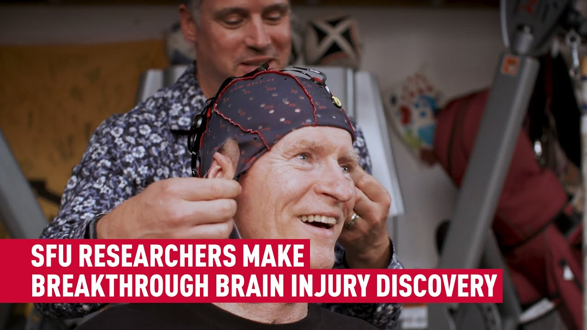

Get Smart: Leverage a Growth Mindset to Build Fluid And Crystalline Intelligence
What are you waiting for? A transformative journey awaits!

Throwing in the Towel Before the Game Begins
Picture this: You’re in a lecture hall listening to a professor drone on – you were interested a few classes ago, but now, to be honest, you have no idea what’s going on – when a peer raises her hand and asks yet another brilliant question.
She always seems to think and speak effortlessly, grasping ideas and formulating arguments with remarkable speed and clarity? Perhaps you feel a pang of self-doubt, convinced, I just don’t have the wiring for this.
Such moments haunt every aspiring student. But what if I told you those neural pathways are far from fixed? The human brain, remarkably adaptable, is designed to learn, to grow, and to evolve.
bIt’s arguably the most powerful learning machine in the history of life on earth, and it has uniquely evolved for rapid acquisition to overcome seemingly intractable barriers.
Not only can your brain learn complex tasks, it can also fundamentally rewire itself, expanding not only your acquired knowledge – your crystallized intelligence – but also the speed and efficiency with which you learn new things – your fluid intelligence.
Your brain isn’t a static organ. It’s a dynamic ecosystem designed for neuroplasticity – the remarkable ability to rewire itself through effort. This isn’t pop psychology; fMRI studies prove neural connectivity thickens when we grapple with novel challenges.
Consider London taxi drivers: mastering the city’s labyrinth reshapes their hippocampus, the brain’s spatial navigation hub. If cab routes can sculpt a driver’s brain, imagine what happens to your brain when you master recursion, object-oriented design, or a maths problem – or when you write an excruciatingly long essay, or do any of those hard assignments you just don’t want to do!
Source: https://www.youtube.com/watch?v=oOiVzf-XR_4
We’ve made a powerful assertion, but it’s demonstrably true. To illustrate, let’s examine some evidence of this incredible human capacity.
Mindset Meets Intelligence: Beyond “Born vs. Built”
But first, let’s clarify those terms. Crystallized intelligence refers to the accumulation of knowledge, skills, and experience throughout a lifetime. It’s embodied in your vocabulary, general knowledge base, and your ability to apply previously learned information.
By contrast, fluid intelligence represents the capability to tackle novel challenges, to reason abstractly, to identify unfamiliar patterns, and to adapt to new situations. Your ability to learn new games or understand complex, never-before-seen problems comes from your fluid intelligence.
What isn’t a fixed quantity is how these interact with a seemingly simple concept: mindset. We often stumble into preconceived notions about skill.
A fixed mindset essentially assumes that intelligence and abilities are set in stone: “I’m just not a math person,” or “I’m simply incapable of writing well.” The corollary leads to a fear of failure, resulting in avoidance and a disinclination to try.
A growth mindset, however, embraces the belief that brainpower and skills are capabilities that grow through dedication and hard work. It frames mistakes as essential stepping stones to understanding, rather than dead ends.
This is where it gets transformative: A growth mindset leverages both intelligences. Crystallized knowledge (your “mental library”) becomes scaffolding for fluid challenges.
When facing an unfamiliar, or even seemingly unsurmountable problem, a growth-minded person doesn’t panic. They ask: Which patterns do I recognize here? (crystallized) and How must I adapt to this? (fluid).
This interplay is your secret weapon in all aspects of life – and it’s trainable.

Proof in Practice: When “I Can’t” Becomes “I Did”
If you’d rather have some proof before jumping into a world of messy code, or signing up for late nights in the library, consider the following stories.
James Holzhauer
Source: https://www.youtube.com/watch?v=MfWoEt1tg4g
The Jeopardy! phenom, was a self-proclaimed C student obsessed with poker and Dumb and Dumber quotes. Critics deemed him not book smart. His response? Rigorous, systematic training – drilling trivia with self-built buzzers, mastering wagering math, and treating knowledge as a muscle. His results: $2.4M in winnings and never-seen-before Jeapardy records, like the highest take-home in a single show. His mantra wasn’t “I’m a genius” but “I had to practice.”
Barbara Oakley
Source: https://www.youtube.com/watch?v=vd2dtkMINIw
Barbara flunked high school math, convinced she “couldn’t grasp numbers.” At 26, after learning Russian for military service, she decided to conquer the subject she’d reviled. Her method? Framing equations as a language to be deconstructed. She employed active recall, spaced repetition, and embraced diffuse thinking – stepping away to let insights brew. Today, she’s an engineering professor and architect of Coursera’s Learning How to Learn, a course taken by 4+ million students. Her journey screams one truth: Passion follows proficiency.
Trevor Greene
Source: https://www.youtube.com/watch?v=-4QaroclkMs
Trevor Greene a Canadian soldier nearly killed by an axe attack in Afghanistan, was given 5% odds of survival. Left paralyzed and aphasic, he faced a nightmare: relearning to speak, walk, and think. Through relentless, incremental effort – repeating vowel sounds for hours, crawling before walking – he reclaimed his cognition. His recovery, documented in the Gemini Award winning documentary Peace Warrior, epitomizes neuroplasticity: the brain rebuilds when the mindset says, “This is possible.”
One Way Or Another
Consider the student struggling to debug a complex piece of code. Someone with a fixed mindset may experience debilitating frustration, interpreting the problem as proof of their inadequacy, perhaps leading to abandonment of the project altogether.
In contrast, the student with a growth mindset views the bugs as valuable learning opportunities. “I haven’t figured this out yet, they might tell themselves. “Let me experiment with different approaches, break down the code step by step, and ask questions.” That approach requires – and, crucially, reinforces – fluid intelligence.
The pattern is consistent: embracing a growth mindset isn’t about abandoning the knowledge you’ve accumulated (crystallized intelligence); it’s about utilizing it as a launchpad for new growth.
Consider writing. Someone strong in writing might initially feel hesitant embracing the seemingly foreign world of coding. But the core skills developed through writing - logical structuring, clear communication, the ability to identify patterns – provide a solid foundation. Approaching coding as a different way to communicate ideas, rather than an entirely new skillset, dramatically increases the chances of success.
Your Growth Toolkit: Actionable Shifts
So now that we know that each time you learn a new skill or conquer a challenge, you strengthen existing pathways and create new ones, and that the more you actively seek those challenges, the stronger your brain becomes, let’s talk mindset hacks for daily growth!
Forget vague try harder advice. Target these 10 mindset levers:
- Embrace the Yet Protocol: Swap “I can’t solve this” with “I can’t solve this yet.” This microscopic linguistic shift primes your brain for growth.
- Process Over Product Language: Swap praise like “You’re a natural!” with “Your revisions made this shine!” This cultivates awareness that skill emerges from iteration, not innate talent.
- The Learning Lens: Reframe setbacks as calibration moments: Ask “What does this teach me about my blind spots?” This transforms failure into a diagnostic tool, not a verdict.
- Mentorship Metamorphosis: Voluntarily explain complex concepts to a beginner, even if shaky yourself. This forces metacognitive reflection and reinforces growth through teaching.
- Neuroplasticity Mantra: Before challenging tasks, repeat: “Every struggle rewires my brain to adapt.” This ties effort to tangible biological progress (jargon like “synaptic pruning” works here).
- Micro-Challenge Rituals: Set daily 30-minute sprints for trivially small goals (e.g., code one line for a new language). This reduces overwhelm and builds momentum through tiny wins.
- Ambiguity Tolerance Training: Highlight gray areas in problems with a sticky note: “What 3 possibilities exist here?” This erodes perfectionism by habituating uncertainty as a playground.
- Mistakes as Data Points: When your project fails, dissect what broke (e.g., misapplied logic vs. syntax), not who you are. Every bug is neural pathway forming.
- Struggle Strategically: Programmers with growth mindsets crave edge cases – problems just beyond their current skill. Why? Fluid intelligence grows precisely in the discomfort zone.
- Identity Calibration: Describe yourself as becoming, not being: “I’m becoming fluent in Node” vs. “I’m bad at Node.” This leverages temporal self-comparison (past/future) over static labels.
Conclusion: Stop Dodging Hard Problems: Forge Neurons in 30 Days
Cultivating a growth mindset, along with understanding your fluid and crystallized intelligence, isn’t simply about achieving higher grades. It’s about unlocking your full potential to adapt, innovate, and achieve in a dynamic world. It’s about recognizing that intelligence isn’t a fixed trait, but a muscle you can strengthen with relentless practice.
And remember, you won’t build mastery by dodging hard problems. You’ll build it by leaning into the friction – tracing loops until recursion clicks, wrestling with conflicts until collaboration feels fluid. Your crystallized knowledge will grow deeper. Your fluid intelligence will stretch wider. And that peer who thinks in circles around you? Soon, you’ll be the one drawing maps. Just as Oakley, Holzhauer, and Greene demonstrated, the possibilities are limitless.
So here’s my challenge to you: For the next 30 days, confront one task you’ve avoided. Make the time for it. When frustration hits, lean in. Ask: “What neural path am I forging right now?” Then watch how your efforts compound.
Your brain is waiting. Start rewiring.
References
Avril, T. (2019, May 17). Can Jeopardy! whiz James Holzhauer be beat? The science of memory and recall explained. Seattle Times. https://www.seattletimes.com/nation-world/can-jeopardy-whiz-james-holzhauer-be-beat-the-science-of-memory-and-recall-explained/
Eich, D. (2018, December 12). /Growth or fixed mindset/. Innovation Learning. https://www.innovationlearning.org/growth-or-fixed-mindset/
Freepik. (n.d.). /High angle bullet journals arrangement/. Retrieved from https://www.freepik.com/free-photo/high-angle-bullet-journals-arrangement_32483262.htm
Freepik. (n.d.). /Illustrated rendering of twin avatar/. Retrieved from https://www.freepik.com/free-ai-image/illustrated-rendering-twin-avatar_94938052.htm
Greene, T., & D’Arcy, R. (2020, June 15). Unleashing potential brain power. TEDxBearCreekPark. https://www.youtube.com/watch/-4QaroclkMs
Grunge. (2019, June 4). Here’s What We Know About James Holzhauer. YouTube. https://www.youtube.com/watch?v=PV_rPpgWMuI
Jeapardy. (n.d.). /Jeopardy: Leaderboard of Legends/. Retrieved from https://www.jeopardy.com/track/leaderboard-of-legends
MacQueen, K. (2013, January 7). Rewiring Trevor Greene’s brain. Maclean’s. https://macleans.ca/news/canada/rewiring-trevor-greenes-brain/
NPR. (2014, August 16). How a math flunker became a math teacher. /NPR Ed/. https://www.npr.org/sections/ed/2014/08/16/340948094/how-a-math-flunker-became-a-math-teacher
Oakley, B. (2014). /A mind for numbers/. Penguin Random House.
Ryan, E. (2024, March 22). Growth mindset vs. fixed mindset: What do they really mean? MentorLoop. https://mentorloop.com/blog/growth-mindset-vs-fixed-mindset-what-do-they-really-mean/
SFU. (2020, October 14). Breakthrough in rewiring brain pushes limits in “Iron Soldier” recovery. Retrieved from https://www.sfu.ca/sfunews/stories/2020/10/breakthrough-in-rewiring-brain-pushes-limits-in--iron-soldier--r.html
Talks at Google. (2015, February 22). /Barbara Oakley | Learning How to Learn/ [Video]. YouTube. https://www.youtube.com/watch?v=vd2dtkMINIw
Time Out. (2020, January 9). I was a London taxi driver for 58 years – here’s what I learned. https://www.timeout.com/london/things-to-do/london-taxi-driver-58-years-what-i-learned (Image by A. Parsons).
Tom the Taxi Driver. (2022, May 13). What a London Taxi Exam Looks Like! [Image]. YouTube. https://i.ytimg.com/vi/oOiVzf-XR_4/maxresdefault.jpg
Yasharoff, H. (2019, June 3). How long can Jeopardy! champ James Holzhauer keep winning? USA TODAY. https://www.usatoday.com/story/life/tv/2019/06/03/james-holzhauer-jeopardy-leaked-clip/1326825001/

{kind=link}